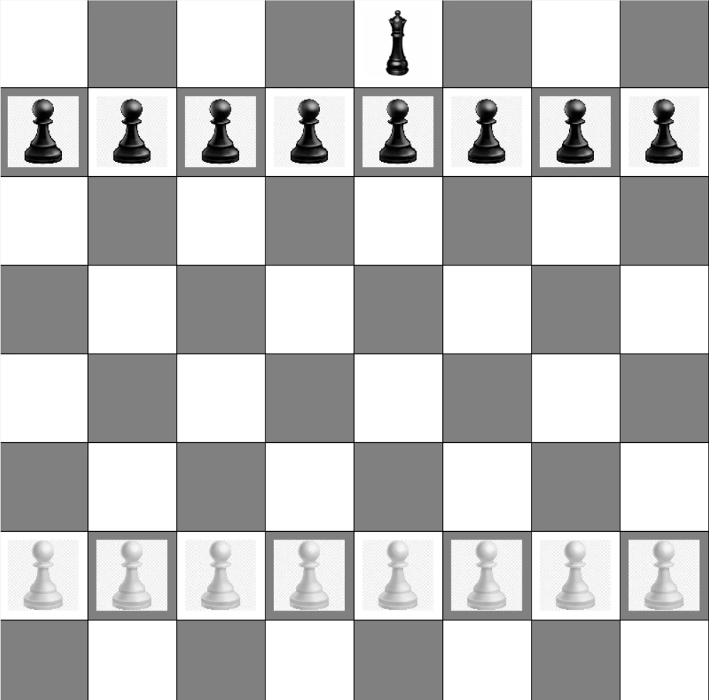
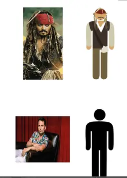
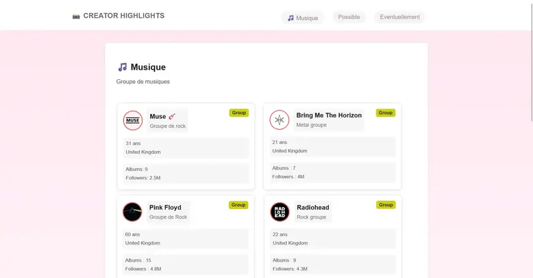
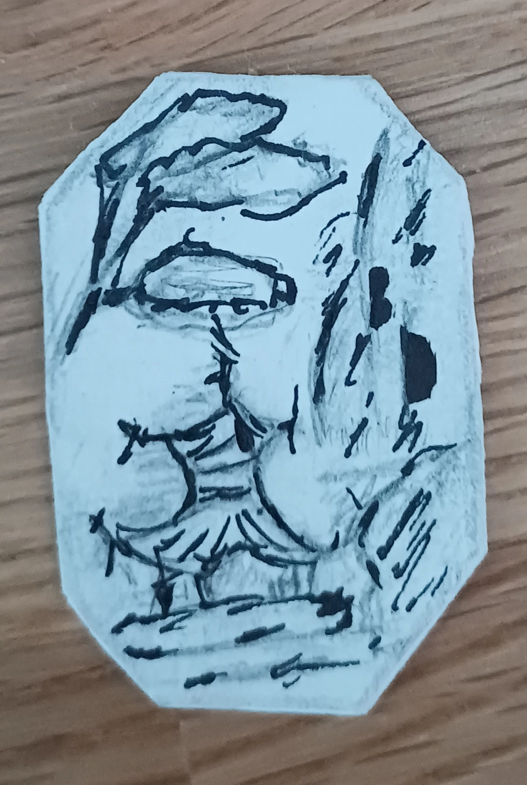
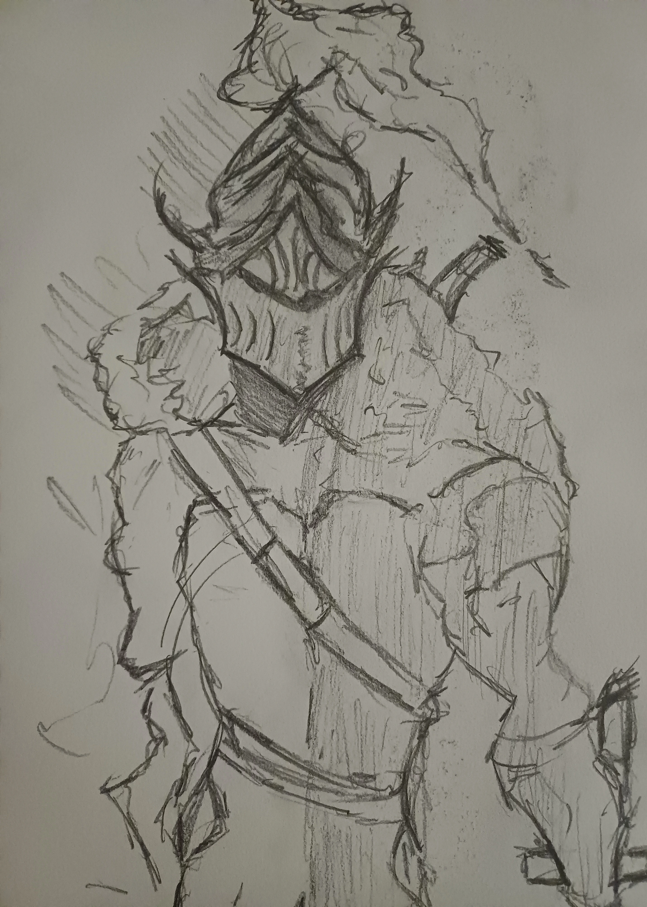

ABOUT ME
Je suis un étudiant en première année de BUT MMI passionné par la création numérique sous toutes ses formes. Mon objectif : mêler design graphique, motion design et développement web pour raconter des histoires visuelles fortes. J'aime expérimenter, apprendre et repousser les limites des outils que j'utilise
Skilled Stats
PROJECTS PLACEHOLDER

Projet Corsica Games Week

Projet Python Echec

Création de personnages sur le logiciel illustrator

Travail sur l'utilisation des flexbox en css

Projet consistant en la création d'un jeu de cartes

Projet de portrait à la main
CONTACT